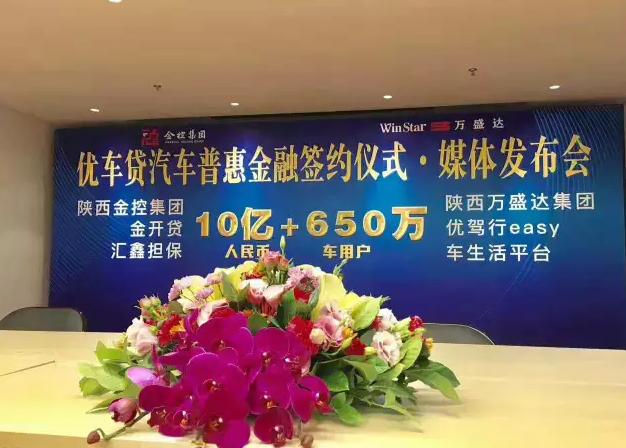
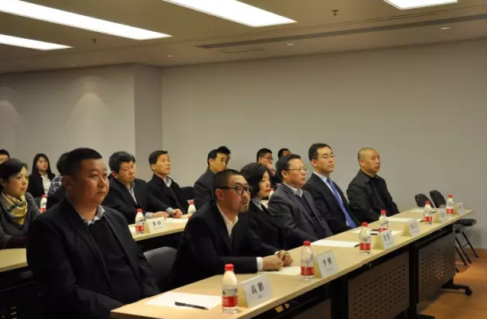

2017年3月17日上午，陕西金融控股集团金开贷、汇鑫担保、陕西万盛达“优驾行easy”APP车生活平台联合举行签约仪式，宣布三家企业共同推出10亿元用于金开贷、“优驾行easy”APP车生活平台的互联网汽车普惠金融服务。
2017年3月17日上午，在陕西万盛达信息科技有限公司，陕西金融控股集团金开贷、汇鑫担保、陕西万盛达“优驾行easy”APP车生活平台联合举行签约仪式，宣布三家企业在互联网汽车金融领域达成战略合作伙伴关系，共同推出10亿元用于金开贷、“优驾行easy”APP车生活平台的汽车普惠金融服务，打造全省知名的互联网金融品牌，为陕西省中小微企业和个人用户提供新型的互联网普惠融资渠道。
陕西金控集团副总经理李云飞、陕西金开贷金融服务有限公司总经理段嘉奇、陕西汇鑫融资担保有限公司总经理高鹏、陕西万盛达信息科技有限公司董事长李刚出席了本次签约仪式。西安市碑林区副区长程默及区财政局、区科技局、区金融办、区发改委、区中小企业局、区街道办等相关领导也应邀莅临现场出席了活动。
“优驾行easy”APP车生活平台为全省800万驾驶人和650万辆机动车提供在线查询、处理车辆违法等综合服务。平台致力于通过大数据驱动业务模式改造传统汽车服务行业，将汽车金融、汽车保险、二手车交易、汽车养护后市场作为核心战略业务，贯彻了“去中间化”和普惠民生的理念，带动了本地传统汽车服务行业与互联网的连接。
对于“优驾行easy”APP车生活平台来说，此次与金开贷、汇鑫担保共同合作开发的汽车普惠金融产品，将运用其独有的互联网汽车金融数据风控体系，结合平台优势，通过跨行业数据资源整合，最大程度地优化传统的金融服务模式，缩短放款周期，降低融资成本，在做好风险控制的前提下，最终服务到传统金融之前难以覆盖到的广大小微企业以及个人用户，增强了资金流动性，让用户通过互联网借款更快捷、更从容、更低息，实现了普惠金融与实体经济发展的完美对接。这一导向也与今年两会上国务院总理李克强着重提出的抓好金融体制改革，增强服务实体经济能力，有效缓解中小微企业融资难、融资贵的问题的理念不谋而合。